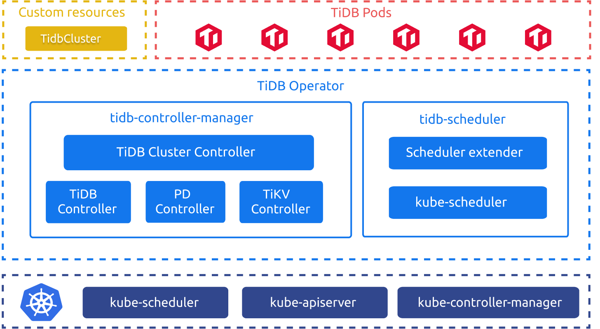
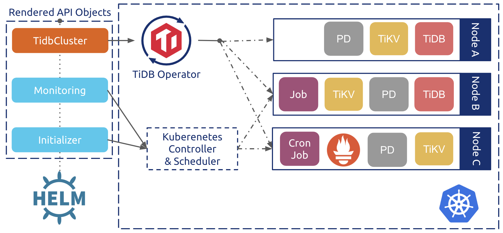

学习时长：
120min
课程收获：
- 了解 Kubernetes 基本概念
- 理解 TiDB Operator 原理
- 了解如何部署 TiDB 集群
课程内容：
本课程简要介绍了 Kubernetes 的基本概念，详细描述了 TiDB Operator 的实现原理以及如何在 Kubernetes 集群上部署 TiDB 集群。
简介
TiDB Operator 是 Kubernetes 上的 TiDB 集群自动运维系统，提供包括部署、升级、扩缩容、备份恢复、配置变更的 TiDB 全生命周期管理。借助 TiDB Operator，TiDB 可以无缝运行在公有云或私有部署的 Kubernetes 集群上。
——来自 PingCAP 官方定义
TiDB Operator 架构

TiDB Operator 像“牧羊人”一样，持续的监督并管理着 TiDB 各组件“羊群”以恰当的状态运行在主机集群“牧场”上。现在运维人员只要告诉 Operator “What to do“，而由 Operator 来决定 “How to do”。在最新版本 TiDB Operator 甚至可以根据实际情况来决定 “What to do”，比如：auto-scaler。真正实现了自动化运维，减轻运维人员维护压力，提高服务能力。
TiDB Operator 组件
- TiDB Cluster 定义：CRD（
CustomResourceDefinition）定义了TidbCluster等自定义资源，使得 Kubernetes 世界认识 TiDB Cluster 并让其与Deployment、StatefulSet一同享受 Kubernetes 的头等公民待遇。目前 TiDB Operator v1.1.0 版本包含的 CRD 有：TidbCluster、Backup、Restore、BackupSchedule、TidbMonitor、TidbInitializer以及TidbClusterAutoScaler。 - 控制器：
tidb-controller-manager包含了一组自定义控制器，控制器通过循环不断比对被控制对象的期望状态与实际状态，并通过自定义的逻辑驱动被控制对象达到期望状态。 - 调度器：
tidb-scheduler是一个 Kubernetes 调度器扩展，它为 Kubernetes 调度器注入 TiDB 集群特有的调度逻辑，比如：为保证高可用，任一 Node 不能调度超过 TiDB 集群半数以上的 TiKV 实例。
自定义资源
- TiDB Cluster 资源：CR（
CustomResource）声明了 TiDB Cluster 自定义资源对象，它声明了TidbCluster对象的期望状态，并被控制器逻辑不断进行处理，同时将实际运行状态记录下来。
Kubernetes 控制平面
kube-apiserver：Kubernetes 控制平面的前端，所有组件通过 API Server 获取或更新对象信息。kube-controller-manager：TidbCluster等 CR 封装了StatefulSet、Deployment、CronJob等原生对象，所以依然需要 K8s 原生控制器来进行控制逻辑。kube-scheduler：调度 TiDB Cluster 的 Pod，filtering阶段，kube-scheduler 筛选出的节点会再经过tidb-scheduler筛选一次，然后 kube-scheduler 再进行scoring选择最合适的节点进行 Pod 调度。
原理浅析

TiDB Operator 中使用 Helm Chart 封装了 TiDB 集群定义。整体的控制流程如下：
- 用户通过 Helm 创建
TidbCluster对象和相应的一系列 Kubernetes 原生对象，比如执行定时备份的CronJob； - TiDB Operator 会通过 Kubernetes API Server watch
TidbCluster以及其它相关对象，基于集群的实际状态不断调整 PD、TiKV、TiDB 的StatefulSet和Service对象； - Kubernetes 的原生控制器根据
StatefulSet、Deployment、CronJob等对象创建更新或删除对应的Pod； - PD、TiKV、TiDB 的
Pod声明中会指定使用tidb-scheduler调度器，tidb-scheduler会在调度对应Pod时应用 TiDB 的特定调度逻辑。
基于上述的声明式控制流程，TiDB Operator 能够自动进行集群节点健康检查和故障恢复。部署、升级、扩缩容等操作也可以通过修改 TidbCluster 对象声明“一键”完成。
操作实践
TiDB-Operator 部署本地测试环境
# 通过 kind 部署 K8s 集群 |
观察 TiDB 的 POD 状态
# kubectl get pods -n dba-test
NAME READY STATUS RESTARTS AGE
test-discovery-668b48577c-lqqbz 1/1 Running 0 7m37s
test-monitor-5b586d8cb-227qx 3/3 Running 0 7m37s
test-pd-0 1/1 Running 0 7m37s
test-pd-1 1/1 Running 0 7m37s
test-pd-2 1/1 Running 1 7m37s
test-tidb-0 2/2 Running 0 6m18s
test-tidb-1 2/2 Running 0 6m18s
test-tikv-0 1/1 Running 0 6m58s
test-tikv-1 1/1 Running 0 6m58s
test-tikv-2 1/1 Running 0 6m58s以上信息显示 TiDB Cluster 所有 Pod 全部运行正常。
访问 TiDB 集群
# nohup kubectl port-forward svc/test-tidb 4000:4000 --namespace=dba-test &
# yum install -y mysql
# mysql -h 127.0.0.1 -uroot -P4000
mysql -h 127.0.0.1 -P 4000 -uroot
Welcome to the MariaDB monitor. Commands end with ; or \g.
Your MySQL connection id is 1
Server version: 5.7.25-TiDB-v3.0.5 MySQL Community Server (Apache License 2.0)
Copyright (c) 2000, 2018, Oracle, MariaDB Corporation Ab and others.
Type 'help;' or '\h' for help. Type '\c' to clear the current input statement.
MySQL [(none)]>显示以上输出显示 TiDB 集群部署成功。